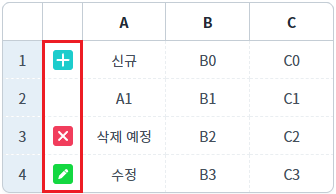

DataList의 'rowStatus'(행 상태)의 값이 'R'인 데이터를 JSON 형식으로 반환받는 예제입니다.
다음은 예제에서 사용한 메소드와 설명입니다.
getRowJSON: 행(Row)의 Index에 해당하는 데이터를 JSON객체로 반환
getRowIndexByStatus: 'rowStatus'(상태값)가 일치하는 행(Row)의 Index를 배열로 반환
DataList는 행(Row)마다 삽입, 수정, 삭제 등의 상태값(RowStatus)을 가지고 있습니다.
상태값은 행의 'rowStatus' 키에 할당되며 문자형 코드로 할당됩니다.
다음 목록은 상태값에 따른 문자형 코드값과 숫자형 코드값입니다.
- status : R / statusValue : 0 - 초기 상태. (변화없음)
- status : U / statusValue : 1 - 갱신. (수정)
- status : C / statusValue : 2 - 삽입. (insert API 호출 시)
- status : D / statusValue : 3 - 삭제. (delete API 호출 시)
- status : V / statusValue : 4 - 삽입 후 삭제. (insert 후 delete 호출 시)
- status : E / statusValue : 5 - 제거. (remove API 호출 시)
DataList의 'rowStatus'(행 상태)의 값이 'R'인 데이터의 인덱스 추출하기
DataList의 'rowStatus'(행 상태)의 값이 'R'인 데이터를 JSON 형식으로 추출하기
1
STEP 1: 초기 상태 확인하기
실행된 GridView의 각 행의 상태 컬럼을 확인합니다. - 1번째 행 : 삽입 상태(C) - 2번째 행 : 초기 상태(R) - 3번째 행 : 삭제 상태(D) - 4번째 행 : 수정 상태(U)
Image 1.브라우저(Chrome) 실행 예시

2
STEP 2: 'Index 추출하기' 버튼을 클릭합니다.
영역 '로그 확인'에 출력된 로그를 확인합니다. 상태값이 'R'(초기 상태)인 행의 인덱스가 배열로 반환됩니다. (브라우저의 개발자 도구 콘솔에도 로그가 출력되며, 반환된 객체를 확인할 수 있습니다.)
Example 1.Log
[14:51:08] 버튼 [Index 추출하기] 클릭 [14:51:08] # 'rowStatus'의 값이 'R'인 Row Index - return 예시) [14:51:08] [1]
1
STEP 1: 초기 상태 확인하기
실행된 GridView의 각 행의 상태 컬럼을 확인합니다. - 1번째 행 : 삽입 상태(C) - 2번째 행 : 초기 상태(R) - 3번째 행 : 삭제 상태(D) - 4번째 행 : 수정 상태(U)
Image 2.브라우저(Chrome) 실행 예시
2
STEP 2: 'JSON 형식으로 데이터 추출하기' 버튼을 클릭합니다.
영역 '로그 확인'에 출력된 로그를 확인합니다. 상태값이 'R'(초기 상태)인 행의 데이터가 JSON 형식으로 배열에 담겨 반환됩니다. (브라우저의 개발자 도구 콘솔에도 로그가 출력되며, 반환된 객체를 확인할 수 있습니다.)
Example 2.Log
[14:32:47] 버튼 [JSON 형식으로 데이터 추출하기] 클릭
[14:32:47] # 'rowStatus'의 값이 'R'인 행의 데이터를 JSON 형식으로 추출하기 - return 예시)
[14:32:47] [
{
"col_a": "A1",
"col_b": "B1",
"col_c": "C1",
"rowStatus": "R"
}
]DataList의 'getRowIndexByStatus' 메소드를 사용하여 스크립트를 작성합니다.
Example 3.Script
//예제 파일에서는 스크립트 scwin.btn_ex1_onclick에 작성되어 있습니다. // DataList 'dlt_exam'의'rowStatus'의 값이 'R'인 Row Index를 배열로 추출합니다. var arrResult = dlt_exam.getRowIndexByStatus("R");
DataList의 'getRowIndexByStatus' 메소드와 'getRowJSON' 메소드를 사용하여 스크립트를 작성합니다.
Example 4.Script
//예제 파일에서는 스크립트 scwin.btn_ex2_onclick에 작성되어 있습니다. // DataList 'dlt_exam'의'rowStatus'의 값이 'R'인 Row Index를 배열로 추출합니다. var arrRowIndex = dlt_exam.getRowIndexByStatus("R"); // 변수 'arrRowIndex'의 길이를 추출합니다. var numArrRowIdxLen = arrRowIndex.length; // 결과를 담을 배열을 선언합니다. var arrResult = []; // 변수 'arrRowIndex'의 길이만큼 'for' 구문을 실행합니다. for (let i = 0; i < numArrRowIdxLen; i++) { let numRowIndex = arrRowIndex[i]; // 행의 Index let jsnRowData = dlt_exam.getRowJSON(numRowIndex); // 행의 데이터를 JSON 형식으로 추출 // 추출한 JSON 형식의 데이터를 배열에 추가 arrResult.push(jsnRowData); }
getRowIndexByStatus
getRowJSON